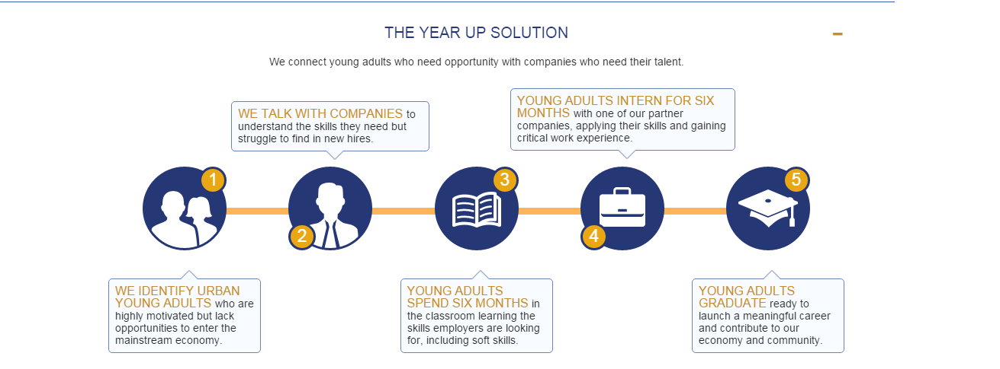

Year Up is a one year program that teaches young adults between the ages of 18-24 technical skills that will help their career. The program is divided into two portions, which are the Learning and Development stage and the Internships stages. The Learning and Development stage trainees learn different skills that will benefit the trainee can take with them at any workplace. The trainees earn an internship after six months, where they are matched with different partners of Year Up. The internships give the trainees hands on experience in various fields using the skills that they have learned. There are 18 locations all over the United States. All locations have their own special bonds, yet they all have the sense of community that supports the trainee during and after the process. There are two locations in the Bay Area. The Silicon Valley location and the San Francisco location. For more information, please email sfbayadmission@yearup.org  Log In Home Year Up Modules Corporate Partners Software Testing and Quality Assurance